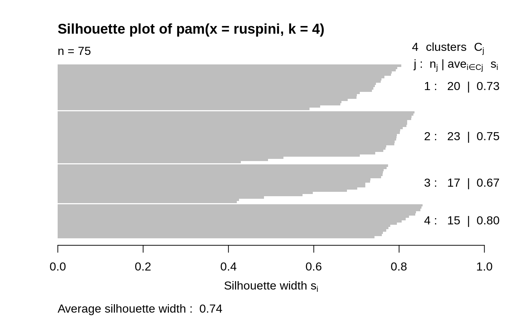
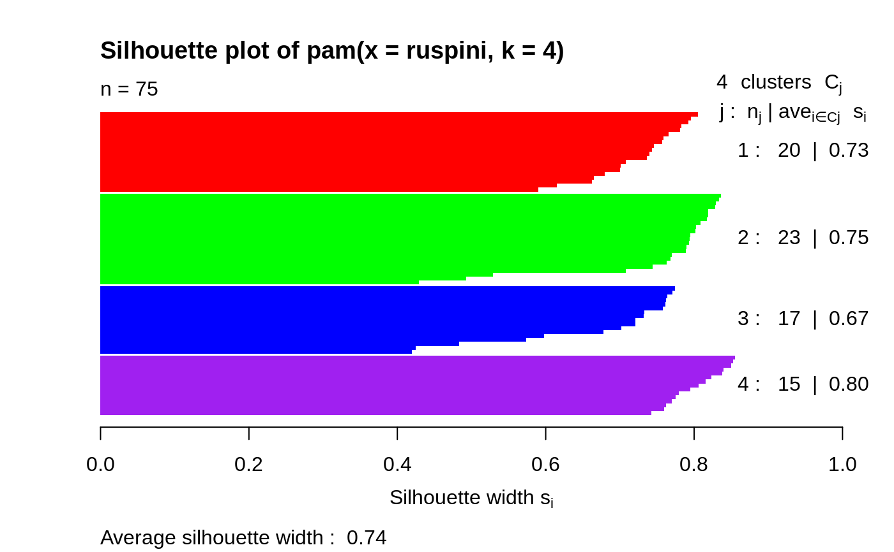
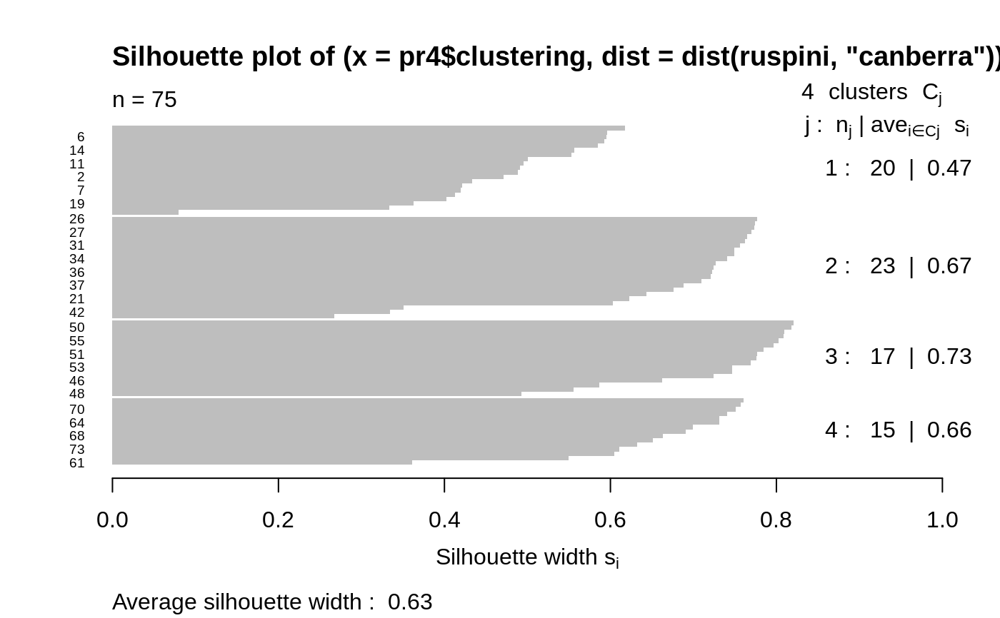
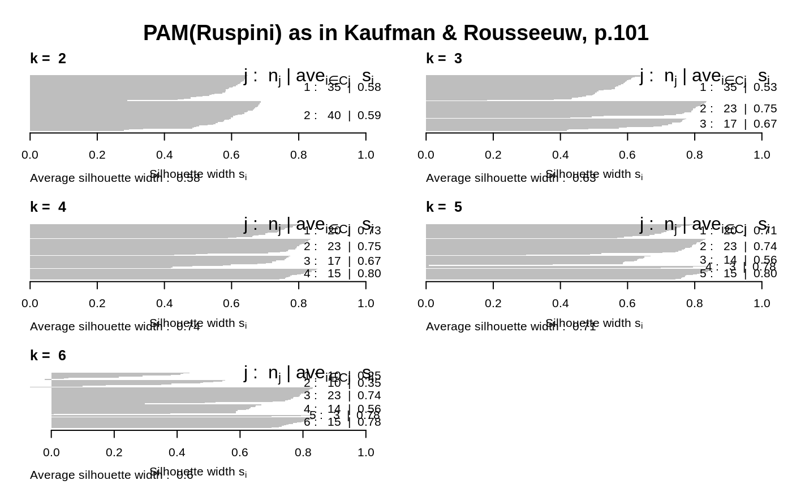
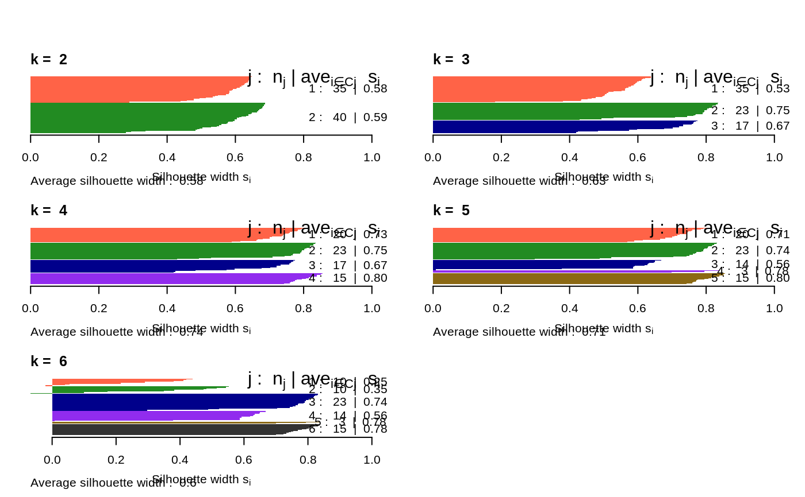
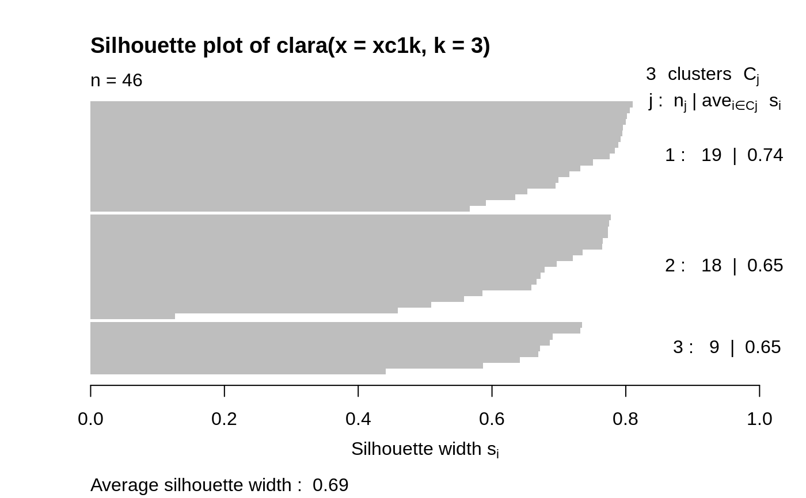
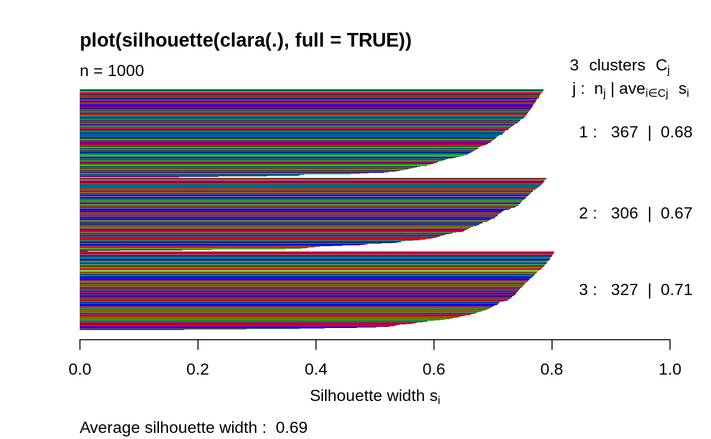
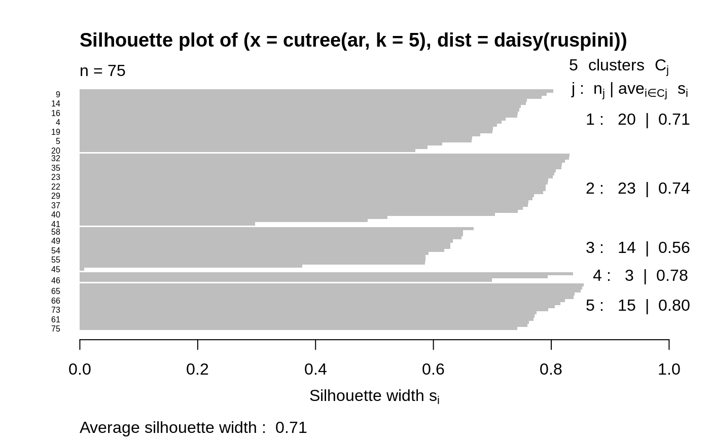
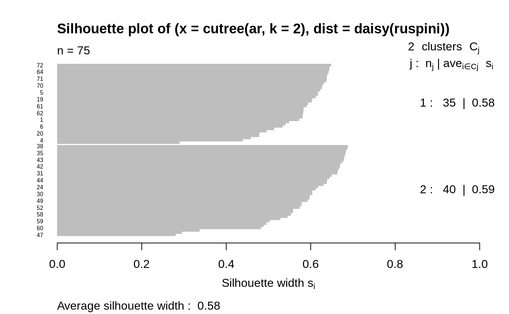

silhouette.RdCompute silhouette information according to a given clustering in \(k\) clusters.
silhouette(x, ...) # S3 method for default silhouette (x, dist, dmatrix, ...) # S3 method for partition silhouette(x, ...) # S3 method for clara silhouette(x, full = FALSE, ...) sortSilhouette(object, ...) # S3 method for silhouette summary(object, FUN = mean, ...) # S3 method for silhouette plot(x, nmax.lab = 40, max.strlen = 5, main = NULL, sub = NULL, xlab = expression("Silhouette width "* s[i]), col = "gray", do.col.sort = length(col) > 1, border = 0, cex.names = par("cex.axis"), do.n.k = TRUE, do.clus.stat = TRUE, ...)
| x | an object of appropriate class; for the |
|---|---|
| dist | a dissimilarity object inheriting from class
|
| dmatrix | a symmetric dissimilarity matrix (\(n \times n\)),
specified instead of |
| full | logical specifying if a full silhouette should be
computed for |
| object | an object of class |
| ... | further arguments passed to and from methods. |
| FUN | function used to summarize silhouette widths. |
| nmax.lab | integer indicating the number of labels which is considered too large for single-name labeling the silhouette plot. |
| max.strlen | positive integer giving the length to which strings are truncated in silhouette plot labeling. |
| main, sub, xlab | arguments to |
| col, border, cex.names | arguments passed
|
| do.col.sort | logical indicating if the colors |
| do.n.k | logical indicating if \(n\) and \(k\) “title text” should be written. |
| do.clus.stat | logical indicating if cluster size and averages should be written right to the silhouettes. |
For each observation i, the silhouette width \(s(i)\) is
defined as follows:
Put a(i) = average dissimilarity between i and all other points of the
cluster to which i belongs (if i is the only observation in
its cluster, \(s(i) := 0\) without further calculations).
For all other clusters C, put \(d(i,C)\) = average
dissimilarity of i to all observations of C. The smallest of these
\(d(i,C)\) is \(b(i) := \min_C d(i,C)\),
and can be seen as the dissimilarity between i and its “neighbor”
cluster, i.e., the nearest one to which it does not belong.
Finally, $$s(i) := \frac{b(i) - a(i) }{max(a(i), b(i))}.$$
silhouette.default() is now based on C code donated by Romain
Francois (the R version being still available as
cluster:::silhouette.default.R).
Observations with a large \(s(i)\) (almost 1) are very well clustered, a small \(s(i)\) (around 0) means that the observation lies between two clusters, and observations with a negative \(s(i)\) are probably placed in the wrong cluster.
While silhouette() is intrinsic to the
partition clusterings, and hence has a (trivial) method
for these, it is straightforward to get silhouettes from hierarchical
clusterings from silhouette.default() with
cutree() and distance as input.
By default, for clara() partitions, the silhouette is
just for the best random subset used. Use full = TRUE
to compute (and later possibly plot) the full silhouette.
silhouette() returns an object, sil, of class
silhouette which is an \(n \times 3\) matrix with
attributes. For each observation i, sil[i,] contains the
cluster to which i belongs as well as the neighbor cluster of i (the
cluster, not containing i, for which the average dissimilarity between its
observations and i is minimal), and the silhouette width \(s(i)\) of
the observation. The colnames correspondingly are
c("cluster", "neighbor", "sil_width").
summary(sil) returns an object of class
summary.silhouette, a list with components
si.summary:numerical summary of the
individual silhouette widths \(s(i)\).
clus.avg.widths:numeric (rank 1) array of clusterwise
means of silhouette widths where mean = FUN is used.
avg.width:the total mean FUN(s) where
s are the individual silhouette widths.
clus.sizes:table of the \(k\) cluster sizes.
call:if available, the call creating sil.
Ordered:logical identical to attr(sil, "Ordered"),
see below.
sortSilhouette(sil) orders the rows of sil as in the
silhouette plot, by cluster (increasingly) and decreasing silhouette
width \(s(i)\).
attr(sil, "Ordered") is a logical indicating if sil is
ordered as by sortSilhouette(). In that case,
rownames(sil) will contain case labels or numbers, and
attr(sil, "iOrd") the ordering index vector.
Rousseeuw, P.J. (1987) Silhouettes: A graphical aid to the interpretation and validation of cluster analysis. J. Comput. Appl. Math., 20, 53--65.
chapter 2 of Kaufman and Rousseeuw (1990), see
the references in plot.agnes.
#> 'silhouette' num [1:75, 1:3] 1 1 1 1 1 1 1 1 1 1 ... #> - attr(*, "dimnames")=List of 2 #> ..$ : chr [1:75] "10" "6" "9" "11" ... #> ..$ : chr [1:3] "cluster" "neighbor" "sil_width" #> - attr(*, "Ordered")= logi TRUE #> - attr(*, "call")= language pam(x = ruspini, k = 4)#> Silhouette of 75 units in 4 clusters from pam(x = ruspini, k = 4) : #> Cluster sizes and average silhouette widths: #> 20 23 17 15 #> 0.7262347 0.7548344 0.6691154 0.8042285 #> Individual silhouette widths: #> Min. 1st Qu. Median Mean 3rd Qu. Max. #> 0.4196 0.7145 0.7642 0.7377 0.7984 0.8549si2 <- silhouette(pr4$clustering, dist(ruspini, "canberra")) summary(si2) # has small values: "canberra"'s fault#> Silhouette of 75 units in 4 clusters from silhouette.default(x = pr4$clustering, dist = dist(ruspini, "canberra")) : #> Cluster sizes and average silhouette widths: #> 20 23 17 15 #> 0.4704136 0.6699338 0.7339873 0.6623204 #> Individual silhouette widths: #> Min. 1st Qu. Median Mean 3rd Qu. Max. #> 0.07951 0.55135 0.67585 0.62972 0.75332 0.82071op <- par(mfrow= c(3,2), oma= c(0,0, 3, 0), mgp= c(1.6,.8,0), mar= .1+c(4,2,2,2)) for(k in 2:6) plot(silhouette(pam(ruspini, k=k)), main = paste("k = ",k), do.n.k=FALSE) mtext("PAM(Ruspini) as in Kaufman & Rousseeuw, p.101", outer = TRUE, font = par("font.main"), cex = par("cex.main")); frame()## the same with cluster-wise colours: c6 <- c("tomato", "forest green", "dark blue", "purple2", "goldenrod4", "gray20") for(k in 2:6) plot(silhouette(pam(ruspini, k=k)), main = paste("k = ",k), do.n.k=FALSE, col = c6[1:k]) par(op)## clara(): standard silhouette is just for the best random subset data(xclara) set.seed(7) str(xc1k <- xclara[ sample(nrow(xclara), size = 1000) ,]) # rownames == indices#> 'data.frame': 1000 obs. of 2 variables: #> $ V1: num 44.6 11.2 71.6 17.6 77.5 ... #> $ V2: num 78.78 27.96 -26.88 69.15 -7.26 ...## The full silhouette: internally needs large (36 MB) dist object: sf <- silhouette(cl3, full = TRUE) ## this is the same as s.full <- silhouette(cl3$clustering, daisy(xc1k)) stopifnot(all.equal(sf, s.full, check.attributes = FALSE, tolerance = 0)) ## color dependent on original "3 groups of each 1000": % __FIXME ??__ plot(sf, col = 2+ as.integer(names(cl3$clustering) ) %/% 1000, main ="plot(silhouette(clara(.), full = TRUE))")## Silhouette for a hierarchical clustering: ar <- agnes(ruspini) si3 <- silhouette(cutree(ar, k = 5), # k = 4 gave the same as pam() above daisy(ruspini)) plot(si3, nmax = 80, cex.names = 0.5)## 2 groups: Agnes() wasn't too good: si4 <- silhouette(cutree(ar, k = 2), daisy(ruspini)) plot(si4, nmax = 80, cex.names = 0.5)